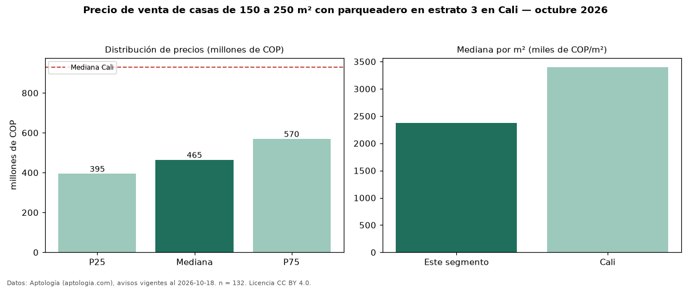

Precio de venta de casas de 150 a 250 m² con parqueadero en estrato 3 en Cali — octubre 2026
En Cali, la mediana de precio de venta de casas de 150 a 250 m² con parqueadero en estrato 3 es COP 465 millones, según 132 avisos vigentes. Frente a la mediana de las casas de 150 a 250 m² en estrato 3 en venta de Cali (COP 450 millones, n = 275), queda 3 % por encima; este segmento reúne el 48 % de esos avisos. Por metro cuadrado, la mediana es COP 2,37 millones/m² (n = 132), 4 % por encima de las casas de 150 a 250 m² en estrato 3 en venta de Cali (COP 2,29 millones/m²). El área mediana anunciada es 200 m². El segmento con más oferta es el de 3 o más habitaciones (131 avisos, mediana COP 470 millones). La mediana de todas las casas en venta de Cali es COP 930 millones (−50 % de diferencia). La mitad central de los avisos va de COP 395 millones a COP 570 millones (razón 1,4), una dispersión moderada. Datos: Aptología (aptologia.com), CC BY 4.0 — https://www.aptologia.com/venta/cali. Archivos: PDF, CSV con las cifras y gráfica PNG.

| Avisos únicos | 132 |
|---|---|
| Percentil 25 | COP 395.000.000 |
| Mediana | COP 465.000.000 |
| Percentil 75 | COP 570.000.000 |
| Mediana por m² | COP 2.372.810 |
Fuente: avisos vigentes de portales inmobiliarios recopilados por Aptología, deduplicados (mínimo 30 avisos únicos por celda). Precios pedidos, no cerrados. Fecha: 2026-10-18.